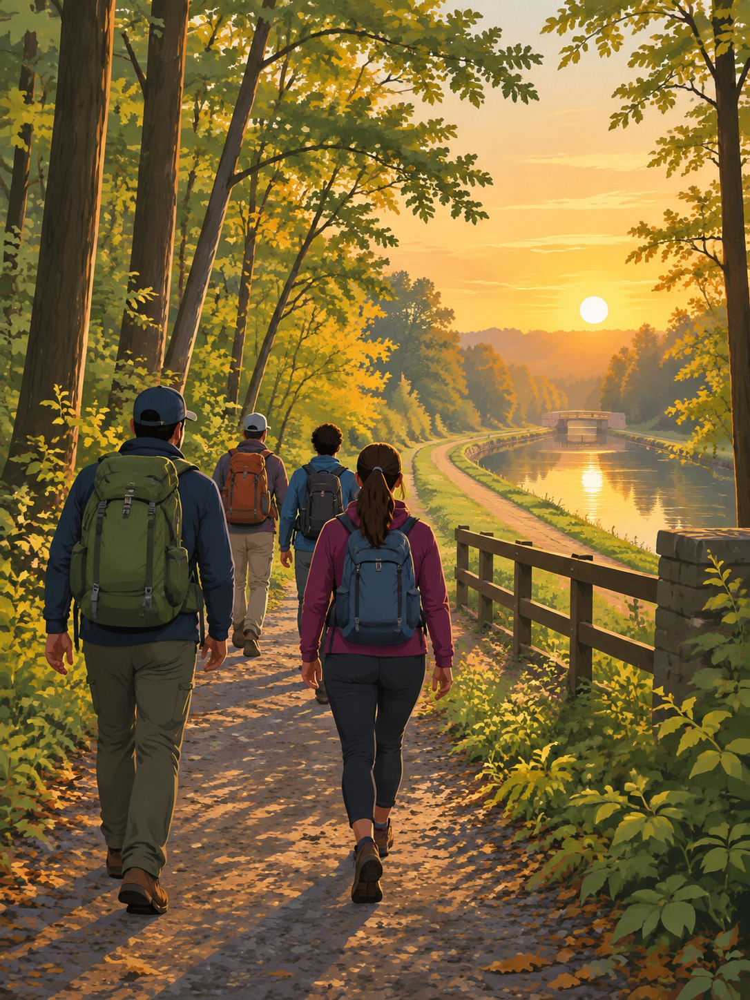

Illustration - real trail photos from the group's chat are in the galleries below.
NJ Hikes - Season One
19 Saturday-morning hikes across New Jersey, June 6 to October 31, 2026.
19 of 22Saturdays hiked
15different spots
6:30-7:30 amusual meet time
~6 milesusual distance, 12-14k steps
8.6 milongest day (Lambertville)
Jun 27, Jul 4, Sep 26missed weeks
1 Mount Tammany, Delaware Water Gap
Sat Jun 6 · ~3.5 mi · The first one. Red Dot up, Blue Dot down; on the trail 8:15 am to 12:15 pm.
10 selected photos · full hike folder: 127 photos + 8 video clips · open in Google Drive (private)
2 Sourland Mountain Preserve
Sat Jun 13 · 7:30 am start; the summit is 568 ft, a gentler follow-up to Tammany.
8 selected photos · full hike folder: 27 photos + 3 video clips · open in Google Drive (private)
3 D&R Canal towpath (south)
Sat Jun 20 · 6 mi · A flat canal towpath walk.
8 selected photos · full hike folder: 57 photos + 1 video clips · open in Google Drive (private)
4 Six Mile Run, Franklin Township
Sat Jul 11 · 6+ mi · The original 6-mile trail at 6:30 am; done in 2.5 hours.
2 selected photos · full hike folder: 2 photos + 1 video clips · open in Google Drive (private)
5 D&R Canal towpath (north)
Sat Jul 18 · ~6 mi · The New Brunswick-Edison side; finished before the rain.
2 selected photos · full hike folder: 4 photos + no clips · open in Google Drive (private)
6 Middlesex Greenway
Sat Jul 25 · ~7 mi · Out and back on the paved greenway.
6 selected photos · full hike folder: 9 photos + no clips · open in Google Drive (private)
7 Mercer County Park
Sat Aug 1 · 6.6 mi · Woods along Assunpink Creek.
9 selected photos · full hike folder: 16 photos + 4 video clips · open in Google Drive (private)
8 Ken Lockwood Gorge + Columbia Trail
Sat Aug 8 · Two rail trails through the gorge.
10 selected photos · full hike folder: 84 photos + 1 video clips · open in Google Drive (private)
9 Washington Valley Park
Sat Aug 15 · ~6.5 mi · A hilly first mile, then the reservoir.
10 selected photos · full hike folder: 54 photos + 3 video clips · open in Google Drive (private)
10 Six Mile Run (Bunker Hill)
Sat Aug 22 · 6 mi · 13,000+ steps through the Bunker Hill section.
10 selected photos · full hike folder: 49 photos + 11 video clips · open in Google Drive (private)
11 Jockey Hollow, Morristown
Sat Aug 29 · 6.35 mi · Grand Loop and connectors, moderate.
7 selected photos · full hike folder: 14 photos + 2 video clips · open in Google Drive (private)
12 D&R Canal trail, Griggstown
Sat Sep 5 · 6+ mi · Towpath from the Griggstown Causeway.
4 selected photos · full hike folder: 5 photos + no clips · open in Google Drive (private)
13 Lambertville riverwalk
Sat Sep 12 · 8.6 mi · The longest of the season: 3+ hours, ~17,000 steps.
9 selected photos · full hike folder: 25 photos + 2 video clips · open in Google Drive (private)
14 Johnson Park, Piscataway
Sat Sep 19 · Raritan-side trail from Landing Lane.
8 selected photos · full hike folder: 16 photos + 1 video clips · open in Google Drive (private)
15 Duke Island Park
Sat Oct 3 · 5.8 mi · Canal loop along the Raritan from Lot C.
10 selected photos · full hike folder: 48 photos + 20 video clips · open in Google Drive (private)
16 Long Branch boardwalk
Sat Oct 10 · Sunrise at the beach, the boardwalk, then volleyball.
11 selected photos · full hike folder: 29 photos + 2 video clips · open in Google Drive (private)
17 Monmouth Battlefield
Sat Oct 17 · A late start after rain, the visitor center film, backyard volleyball.
10 selected photos · full hike folder: 70 photos + 6 video clips · open in Google Drive (private)
18 Garret Mountain Reservation
Sat Oct 24 · 5.2 mi · 11,000+ steps and a 38-floor climb, the biggest since Tammany.
10 selected photos · full hike folder: 48 photos + 4 video clips · open in Google Drive (private)
19 Duke Farms
Sat Oct 31 · In at the 8:30 opening; 14,000 steps in 2.5 hours.
11 selected photos · full hike folder: 101 photos + 3 video clips · open in Google Drive (private)